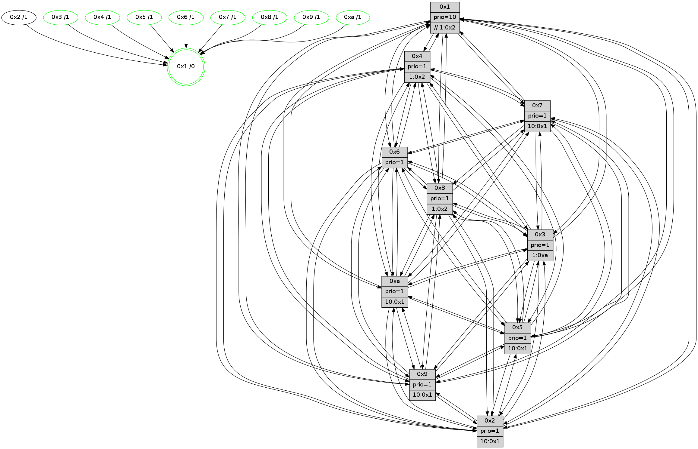

>> << IDX [start] -100 -25 -5 +0 +5 +25 +100 [1080.16803408]
 Previous packets
----------------------------------------------------------------------
1075.439249 beacon01(faad) #0 coord=01,02,03,04,05,06,07,0a,09,08 cycle=688.0ms assoc
-- color-indic=1 64 20 d9
1075.449231 beacon02(faad) #0 coord=01,02,03,04,05,06,07,0a,09,08 cycle=688.0ms assoc 64 b3 e8
1075.459232 beacon03(faad) #0 coord=01,02,03,04,05,06,07,0a,09,08 cycle=688.0ms assoc 64 c9 a5
1075.469231 beacon04(faad) #0 coord=01,02,03,04,05,06,07,0a,09,08 cycle=688.0ms assoc 64 be 4f
1075.479231 beacon05(faad) #0 coord=01,02,03,04,05,06,07,0a,09,08 cycle=688.0ms assoc 64 c4 02
1075.489232 beacon06(faad) #0 coord=01,02,03,04,05,06,07,0a,09,08 cycle=688.0ms assoc 64 4a d5
1075.499233 beacon07(faad) #0 coord=01,02,03,04,05,06,07,0a,09,08 cycle=688.0ms assoc 64 30 98
1075.509237 beacon0a(faad) #0 coord=01,02,03,04,05,06,07,0a,09,08 cycle=688.0ms assoc 64 41 93
1075.529237 beacon08(faad) #0 coord=01,02,03,04,05,06,07,0a,09,08 cycle=688.0ms assoc 64 b5 09
1075.540405 [Hello(2): seq=683 sym=4,5,7,6,3,9,8,10,1 sysInfo=hasWarning stat=4:6,6,12,8/5:7,5,2,0/7:7,9,11,11/6:10,5,4,10/3:6,5,2,7/9:14,5,4,6/8:10,13,0,9/10:2,6,6,10/1:4,6,2,0]
1075.543504 [Color(8) seq=309 @0:0 prio=1 >1.@2,1.@3,1.@5,1.@a]
1075.545342 [Color(10) seq=276 @0:0 prio=1 >10.@1,1.@2,1.@3,1.@5]
1075.547604 [Hello(3): seq=687 sym=1,7,6,2,4,8,9,10,5 sysInfo=hasWarning stat=1:0,12,10,0/7:4,11,3,9/6:14,5,2,4/2:14,13,6,15/4:8,2,8,9/8:3,13,1,2/9:15,0,8,13/10:4,3,4,3/5:7,3,13,14]
1075.552004 [Color(3) seq=316 @0:0 prio=1 >1.@a]
1075.555939 [Hello(1): seq=596 sym=4,2,9,5,10,3,8,6,7 sysInfo=coloring-mode-on,ColoringModeRequestCalled stat=4:9,12,9,2/2:9,1,9,15/9:2,2,8,7/5:12,14,0,7/10:3,13,10,5/3:8,0,13,5/8:1,13,10,1/6:3,15,10,12/7:6,5,9,12]
1075.559717 [Hello(6): seq=687 sym=2,3,5,4,7,9,8,10,1 sysInfo=hasWarning stat=2:3,11,11,5/3:14,13,8,10/5:3,2,8,0/4:8,11,2,3/7:15,9,10,9/9:7,9,11,7/8:6,8,5,3/10:9,0,14,12/1:15,2,15,1]
1075.563478 [Color(6) seq=319 @0:0 prio=1]
----------------------------------------------------------------------
1076.227379 beacon01(faad) #0 coord=01,02,03,04,05,06,07,0a,09,08 cycle=688.0ms assoc
-- color-indic=1 64 9c dc
1076.237362 beacon02(faad) #0 coord=01,02,03,04,05,06,07,0a,09,08 cycle=688.0ms assoc 64 0f ed
1076.247362 beacon03(faad) #0 coord=01,02,03,04,05,06,07,0a,09,08 cycle=688.0ms assoc 64 75 a0
1076.257362 beacon04(faad) #0 coord=01,02,03,04,05,06,07,0a,09,08 cycle=688.0ms assoc 64 02 4a
1076.267363 beacon05(faad) #0 coord=01,02,03,04,05,06,07,0a,09,08 cycle=688.0ms assoc 64 78 07
1076.277364 beacon06(faad) #0 coord=01,02,03,04,05,06,07,0a,09,08 cycle=688.0ms assoc 64 f6 d0
1076.287364 beacon07(faad) #0 coord=01,02,03,04,05,06,07,0a,09,08 cycle=688.0ms assoc 64 8c 9d
1076.297368 beacon0a(faad) #0 coord=01,02,03,04,05,06,07,0a,09,08 cycle=688.0ms assoc 64 fd 96
1076.307367 beacon09(faad) #0 coord=01,02,03,04,05,06,07,0a,09,08 cycle=688.0ms assoc 64 73 41
1076.317371 beacon08(faad) #0 coord=01,02,03,04,05,06,07,0a,09,08 cycle=688.0ms assoc 64 09 0c
1076.329875 [Hello(10): seq=620 sym=6,2,3,8,7,5,9,4,1 sysInfo=hasWarning stat=6:14,3,12,5/2:15,0,1,9/3:6,13,1,10/8:15,2,6,0/7:0,7,12,4/5:7,15,10,14/9:14,14,14,2/4:9,15,14,8/1:2,7,8,1]
1076.332598 [Hello(7): seq=687 sym=2,3,5,6,8,9,10,1 sysInfo=hasWarning stat=2:7,9,15,0/3:14,14,12,14/5:15,10,13,1/6:4,0,12,8/8:1,1,9,1/9:2,6,1,1/10:1,7,15,4/1:12,4,1,0]
1076.335094 [Color(5) seq=294 @0:0 prio=1 >10.@1,1.@2,1.@3,1.@4]
1076.336887 [Hello(9): seq=631 sym=2,5,3,4,7,6,8,10,1 sysInfo=hasWarning stat=2:6,1,5,6/5:11,3,4,5/3:8,10,8,14/4:4,5,2,0/7:1,7,6,10/6:6,7,0,10/8:14,6,10,3/10:4,13,10,3/1:11,10,0,1]
1076.339419 [Hello(8): seq=631 sym=5,2,3,4,9,6,7,10,1 sysInfo=hasWarning stat=5:11,5,11,0/2:6,5,7,8/3:4,9,11,14/4:1,11,2,9/9:14,1,13,3/6:12,1,11,12/7:14,6,11,2/10:3,2,14,3/1:0,9,15,0]
1076.342272 [Color(7) seq=246 @0:0 prio=1 >10.@1,1.@2,1.@3,1.@5]
1076.344837 [Hello(4): seq=687 sym=5,6,2,3,9,8,10,1 asym=7 sysInfo= stat=5:13,3,7,14/6:15,11,7,11/2:0,1,2,13/3:1,8,6,10/9:7,0,13,10/8:4,13,13,4/10:15,4,15,12/1:6,12,0,1/7:12,8,8,9]
1076.349187 [Color(1) seq=368 @0:0 prio=10 >>1.@2,1.@3,1.@4]
1076.354359 [Color(9) seq=293 @0:0 prio=1 >10.@1,1.@2,1.@3,1.@5]
1076.361105 [Color(4) seq=267 @0:0 prio=1 >1.@2,1.@3,1.@5,1.@6]
----------------------------------------------------------------------
1077.015510 beacon01(faad) #0 coord=01,02,03,04,05,06,07,0a,09,08 cycle=688.0ms assoc
-- color-indic=1 64 48 e9
1077.025492 beacon02(faad) #0 coord=01,02,03,04,05,06,07,0a,09,08 cycle=688.0ms assoc 64 db d8
1077.035493 beacon03(faad) #0 coord=01,02,03,04,05,06,07,0a,09,08 cycle=688.0ms assoc 64 a1 95
1077.045492 beacon04(faad) #0 coord=01,02,03,04,05,06,07,0a,09,08 cycle=688.0ms assoc 64 d6 7f
1077.055493 beacon05(faad) #0 coord=01,02,03,04,05,06,07,0a,09,08 cycle=688.0ms assoc 64 ac 32
1077.065493 beacon06(faad) #0 coord=01,02,03,04,05,06,07,0a,09,08 cycle=688.0ms assoc 64 22 e5
1077.075494 beacon07(faad) #0 coord=01,02,03,04,05,06,07,0a,09,08 cycle=688.0ms assoc 64 58 a8
1077.085498 beacon0a(faad) #0 coord=01,02,03,04,05,06,07,0a,09,08 cycle=688.0ms assoc 64 29 a3
1077.095499 beacon09(faad) #0 coord=01,02,03,04,05,06,07,0a,09,08 cycle=688.0ms assoc 64 a7 74
1077.105499 beacon08(faad) #0 coord=01,02,03,04,05,06,07,0a,09,08 cycle=688.0ms assoc 64 dd 39
1077.117298 [Hello(2): seq=684 sym=4,5,7,6,3,9,8,10,1 sysInfo=hasWarning stat=4:7,7,12,8/5:7,6,2,0/7:8,10,11,11/6:11,6,4,10/3:7,6,2,7/9:15,6,4,6/8:11,14,0,9/10:3,7,6,10/1:5,7,2,0]
1077.120018 [Color(10) seq=277 @0:0 prio=1 >10.@1,1.@2,1.@3,1.@5]
1077.121652 [Hello(1): seq=597 sym=4,2,9,5,10,3,8,6,7 sysInfo=coloring-mode-on,ColoringModeRequestCalled stat=4:9,13,9,2/2:9,1,9,15/9:2,3,8,7/5:12,14,0,7/10:4,13,10,5/3:8,0,13,5/8:1,13,10,1/6:4,0,10,12/7:6,5,9,12]
1077.124120 [Hello(6): seq=688 sym=2,3,5,4,7,9,8,10,1 sysInfo=hasWarning stat=2:4,11,11,5/3:14,13,8,10/5:3,3,8,0/4:9,12,2,3/7:0,10,10,9/9:8,10,11,7/8:7,9,5,3/10:10,0,14,12/1:15,3,15,1]
1077.126550 [Color(8) seq=310 @0:0 prio=1 >1.@2,1.@3,1.@5,1.@a]
1077.129061 [Color(6) seq=320 @0:0 prio=1]
1077.131160 [Hello(3): seq=688 sym=1,7,6,2,4,8,9,10,5 sysInfo=hasWarning stat=1:1,13,10,0/7:5,12,3,9/6:15,6,2,4/2:15,13,6,15/4:9,3,8,9/8:4,14,1,2/9:0,1,8,13/10:5,3,4,3/5:7,4,13,14]
1077.134702 [Hello(5): seq=688 sym=7,6,4,3,1,9,8,10,2 sysInfo=hasWarning stat=7:14,12,15,11/6:15,2,0,1/4:2,12,9,10/3:15,15,4,12/1:1,3,2,1/9:0,15,9,8/8:6,9,7,0/10:12,4,4,7/2:0,9,9,4]
1077.138915 [Color(3) seq=317 @0:0 prio=1 >1.@a]
1077.142370 [STC(1) #0.158 tree-change,inconsistent-stability,stable,to-color d=0]
----------------------------------------------------------------------
1077.803640 beacon01(faad) #0 coord=01,02,03,04,05,06,07,0a,09,08 cycle=688.0ms assoc
-- color-indic=1 64 f4 ec
1077.813622 beacon02(faad) #0 coord=01,02,03,04,05,06,07,0a,09,08 cycle=688.0ms assoc 64 67 dd
1077.823623 beacon03(faad) #0 coord=01,02,03,04,05,06,07,0a,09,08 cycle=688.0ms assoc 64 1d 90
1077.833624 beacon04(faad) #0 coord=01,02,03,04,05,06,07,0a,09,08 cycle=688.0ms assoc 64 6a 7a
1077.843623 beacon05(faad) #0 coord=01,02,03,04,05,06,07,0a,09,08 cycle=688.0ms assoc 64 10 37
1077.853623 beacon06(faad) #0 coord=01,02,03,04,05,06,07,0a,09,08 cycle=688.0ms assoc 64 9e e0
1077.863624 beacon07(faad) #0 coord=01,02,03,04,05,06,07,0a,09,08 cycle=688.0ms assoc 64 e4 ad
1077.873629 beacon0a(faad) #0 coord=01,02,03,04,05,06,07,0a,09,08 cycle=688.0ms assoc 64 95 a6
1077.883628 beacon09(faad) #0 coord=01,02,03,04,05,06,07,0a,09,08 cycle=688.0ms assoc 64 1b 71
1077.893632 beacon08(faad) #0 coord=01,02,03,04,05,06,07,0a,09,08 cycle=688.0ms assoc 64 61 3c
1077.906057 [Hello(8): seq=632 sym=5,2,3,4,9,6,7,10,1 sysInfo=hasWarning stat=5:12,5,11,0/2:7,5,7,8/3:5,10,11,14/4:2,12,2,9/9:14,2,13,3/6:12,2,11,12/7:14,7,11,2/10:3,2,14,3/1:0,10,0,0]
1077.909100 [Color(1) seq=369 @0:0 prio=10 >>1.@2,1.@3,1.@4]
1077.910757 [Hello(4): seq=688 sym=5,6,2,3,9,8,10,1 asym=7 sysInfo= stat=5:14,3,7,14/6:0,12,7,11/2:1,1,2,13/3:2,9,6,10/9:7,0,13,10/8:4,13,13,4/10:0,5,15,12/1:7,12,1,1/7:12,8,8,9]
1077.913510 [STC(3)->1 #0.158 tree-change,inconsistent-stability,stable,to-color d=1]
1077.914746 [STC(2)->1 #0.158 tree-change,inconsistent-stability,to-color d=1]
1077.916341 [STC(6)->1 #0.158 tree-change,inconsistent-stability,stable,to-color d=1]
1077.918065 [STC(4)->1 #0.158 tree-change,inconsistent-stability,stable,to-color d=1]
1077.919500 [STC(8)->1 #0.158 tree-change,inconsistent-stability,stable,to-color d=1]
1077.920967 [Color(4) seq=268 @0:0 prio=1 >1.@2,1.@3,1.@5,1.@6]
1077.922623 [STC(5)->1 #0.158 tree-change,inconsistent-stability,stable,to-color d=1]
1077.924880 [Color(5) seq=295 @0:0 prio=1 >10.@1,1.@2,1.@3,1.@4]
1077.929319 [Hello(10): seq=621 sym=6,2,3,8,7,5,9,4,1 sysInfo=hasWarning stat=6:15,4,12,5/2:0,0,1,9/3:7,14,1,10/8:0,2,6,0/7:1,8,12,4/5:8,0,10,14/9:15,15,14,2/4:10,0,14,8/1:3,8,9,1]
1077.932585 [Hello(9): seq=632 sym=2,5,3,4,7,6,8,10,1 sysInfo=hasWarning stat=2:7,1,5,6/5:12,3,4,5/3:9,11,8,14/4:4,6,2,0/7:1,7,6,10/6:7,8,0,10/8:14,6,10,3/10:5,14,10,3/1:12,10,1,1]
1077.935954 [Hello(7): seq=688 sym=2,3,5,6,4,8,9,10,1 sysInfo=hasWarning stat=2:8,9,15,0/3:15,15,12,14/5:0,10,13,1/6:5,1,12,8/4:0,1,0,0/8:1,1,9,1/9:2,7,1,1/10:2,8,15,4/1:13,5,2,0]
1077.940354 [STC(7)->1 #0.158 tree-change,inconsistent-stability,stable,to-color d=1]
1077.942093 [STC(9)->1 #0.158 tree-change,inconsistent-stability,stable,to-color d=1]
1077.943731 [Color(9) seq=294 @0:0 prio=1 >10.@1,1.@2,1.@3,1.@5]
1077.947238 [Color(7) seq=247 @0:0 prio=1 >10.@1,1.@2,1.@3,1.@5]
1077.951742 [STC(10)->1 #0.158 tree-change,inconsistent-stability,stable,to-color d=1]
----------------------------------------------------------------------
1078.591773 beacon01(faad) #0 coord=01,02,03,04,05,06,07,0a,09,08 cycle=688.0ms assoc
-- color-indic=1 64 30 e2
1078.601755 beacon02(faad) #0 coord=01,02,03,04,05,06,07,0a,09,08 cycle=688.0ms assoc 64 a3 d3
1078.611756 beacon03(faad) #0 coord=01,02,03,04,05,06,07,0a,09,08 cycle=688.0ms assoc 64 d9 9e
1078.621756 beacon04(faad) #0 coord=01,02,03,04,05,06,07,0a,09,08 cycle=688.0ms assoc 64 ae 74
1078.631756 beacon05(faad) #0 coord=01,02,03,04,05,06,07,0a,09,08 cycle=688.0ms assoc 64 d4 39
1078.641756 beacon06(faad) #0 coord=01,02,03,04,05,06,07,0a,09,08 cycle=688.0ms assoc 64 5a ee
1078.651757 beacon07(faad) #0 coord=01,02,03,04,05,06,07,0a,09,08 cycle=688.0ms assoc 64 20 a3
1078.661762 beacon0a(faad) #0 coord=01,02,03,04,05,06,07,0a,09,08 cycle=688.0ms assoc 64 51 a8
1078.671761 beacon09(faad) #0 coord=01,02,03,04,05,06,07,0a,09,08 cycle=688.0ms assoc 64 df 7f
1078.681762 beacon08(faad) #0 coord=01,02,03,04,05,06,07,0a,09,08 cycle=688.0ms assoc 64 a5 32
1078.694551 [Hello(5): seq=689 sym=7,6,4,3,1,9,8,10,2 sysInfo=hasWarning stat=7:15,13,0,11/6:15,2,0,1/4:2,12,9,10/3:15,0,4,12/1:1,3,3,1/9:1,0,10,8/8:7,9,7,0/10:13,4,5,7/2:0,9,9,4]
1078.696967 PARSE ERROR************************
Traceback (most recent call last):
File "PacketAnalysis.py", line 167, in showOperaPacket
structPacket = OperaPacketParse.parsePacket(rawPacket)
File "../../pkg-python/HipSens/Core/OperaPacketParse.py", line 461, in parsePacket
return parseHelloMessage(data)
File "../../pkg-python/HipSens/Core/OperaPacketParse.py", line 127, in parseHelloMessage
assert struct.calcsize("H")*len(neighAddrList) == len(linkList)
AssertionError
48 34 01 00 02 56 00 02 02 12 04 00 02 00 09 00 05 00 0a 00 03 00 08 00 06 00 07 00 53 04 00 84 00 00 4c 12 2a ea fa 19 79 43 71 fc 5b d5 5e 08 1b d2 cb 04 ca 67 4c c7
1078.699464 [Hello(2): seq=685 sym=4,5,7,6,3,9,8,10,1 sysInfo=hasWarning stat=4:7,8,13,8/5:8,7,3,0/7:9,11,12,11/6:12,7,5,10/3:8,7,2,7/9:0,7,5,6/8:11,14,1,9/10:4,8,7,10/1:6,7,3,0]
1078.702655 [Color(8) seq=311 @0:0 prio=1 >1.@2,1.@3,1.@5,1.@a]
1078.704534 [Hello(3): seq=689 sym=1,7,6,2,4,8,9,10,5 sysInfo=hasWarning stat=1:1,13,11,0/7:6,13,4,9/6:15,6,3,4/2:0,13,7,15/4:9,4,9,9/8:4,14,2,2/9:1,2,9,13/10:6,3,5,3/5:7,5,14,14]
1078.707369 [Color(3) seq=318 @0:0 prio=1 >1.@a]
1078.709519 [Color(10) seq=278 @0:0 prio=1 >10.@1,1.@2,1.@3,1.@5]
1078.712405 [Hello(6): seq=689 sym=2,3,5,4,7,9,8,10,1 sysInfo=hasWarning stat=2:5,11,11,5/3:15,14,8,10/5:4,4,9,0/4:9,13,3,3/7:1,11,11,9/9:9,11,12,7/8:7,10,6,3/10:11,1,15,12/1:15,3,0,1]
1078.715869 [Color(6) seq=321 @0:0 prio=1]
----------------------------------------------------------------------
1079.379904 beacon01(faad) #0 coord=01,02,03,04,05,06,07,0a,09,08 cycle=688.0ms assoc
-- color-indic=1 64 8c e7
1079.389885 beacon02(faad) #0 coord=01,02,03,04,05,06,07,0a,09,08 cycle=688.0ms assoc 64 1f d6
1079.399886 beacon03(faad) #0 coord=01,02,03,04,05,06,07,0a,09,08 cycle=688.0ms assoc 64 65 9b
1079.409886 beacon04(faad) #0 coord=01,02,03,04,05,06,07,0a,09,08 cycle=688.0ms assoc 64 12 71
1079.419887 beacon05(faad) #0 coord=01,02,03,04,05,06,07,0a,09,08 cycle=688.0ms assoc 64 68 3c
1079.429886 beacon06(faad) #0 coord=01,02,03,04,05,06,07,0a,09,08 cycle=688.0ms assoc 64 e6 eb
1079.439888 beacon07(faad) #0 coord=01,02,03,04,05,06,07,0a,09,08 cycle=688.0ms assoc 64 9c a6
1079.449891 beacon0a(faad) #0 coord=01,02,03,04,05,06,07,0a,09,08 cycle=688.0ms assoc 64 ed ad
1079.459892 beacon09(faad) #0 coord=01,02,03,04,05,06,07,0a,09,08 cycle=688.0ms assoc 64 63 7a
1079.469892 beacon08(faad) #0 coord=01,02,03,04,05,06,07,0a,09,08 cycle=688.0ms assoc 64 19 37
1079.482382 [Hello(8): seq=633 sym=5,2,3,4,9,6,7,10,1 sysInfo=hasWarning stat=5:13,6,12,0/2:7,5,7,8/3:6,11,11,14/4:2,13,2,9/9:15,3,14,3/6:13,3,11,12/7:15,8,12,2/10:4,3,15,3/1:0,10,0,0]
1079.485421 [Hello(9): seq=633 sym=2,5,3,4,7,6,8,10,1 sysInfo=hasWarning stat=2:8,1,5,6/5:13,3,4,5/3:10,12,8,14/4:4,6,2,0/7:1,8,6,10/6:8,9,0,10/8:15,7,10,3/10:5,15,11,3/1:12,10,1,1]
1079.489410 [Hello(4): seq=689 sym=5,7,6,2,3,9,8,10,1 sysInfo= stat=5:15,4,8,14/7:13,9,9,9/6:1,13,7,11/2:2,1,2,13/3:3,10,6,10/9:8,1,14,10/8:5,14,13,4/10:1,6,0,12/1:7,12,1,1]
1079.494823 [Hello(10): seq=622 sym=6,2,3,8,7,5,9,4,1 sysInfo=hasWarning stat=6:0,5,12,5/2:0,0,1,9/3:7,14,1,10/8:0,2,6,0/7:1,8,12,4/5:9,0,10,14/9:15,15,14,2/4:10,0,14,8/1:3,8,9,1]
1079.497532 [Color(5) seq=296 @0:0 prio=1 >10.@1,1.@2,1.@3,1.@4]
1079.500227 [Hello(7): seq=689 sym=2,3,5,6,4,8,9,10,1 sysInfo=hasWarning stat=2:9,9,15,0/3:0,0,12,14/5:1,10,13,1/6:6,2,12,8/4:0,1,0,0/8:2,2,9,1/9:2,7,1,1/10:2,9,0,4/1:13,5,2,0]
1079.504962 [Color(7) seq=248 @0:0 prio=1 >10.@1,1.@2,1.@3,1.@5]